Početna
O meni
Vježbe
Video
Vježbe
Na ovoj se stranici nalaze sve moje odrađene vježbe.
Vježba 1 - Font
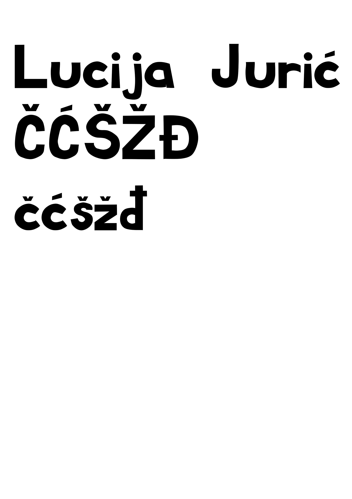
Vježba 2 - Krivulje
 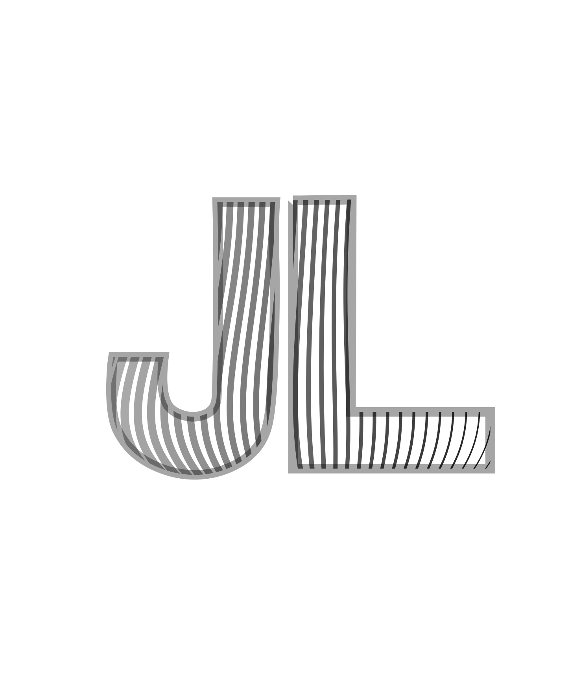
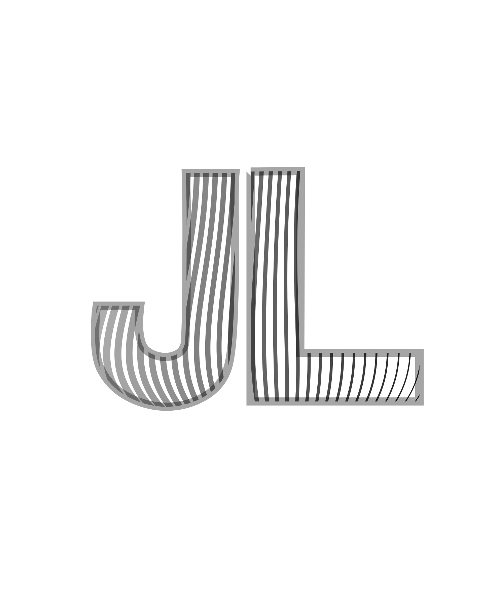
Vježba 3 - Ilustrator
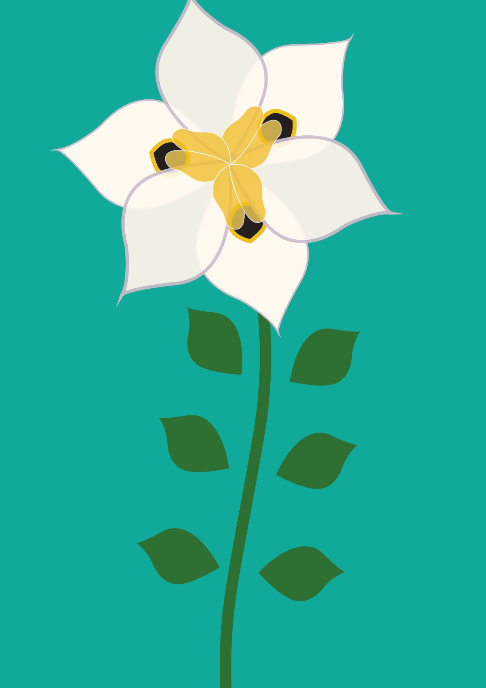
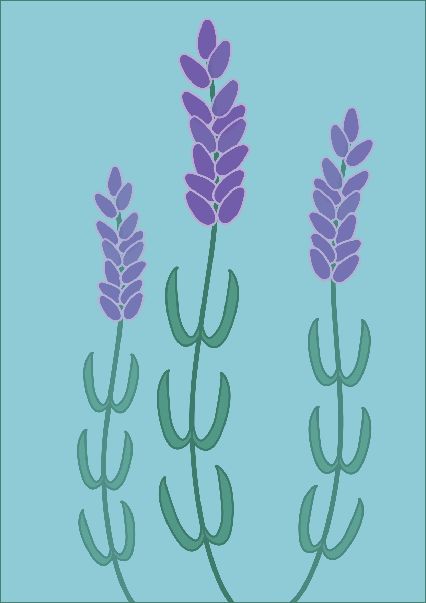
Vježba 4 - Gradijenti i transparencija
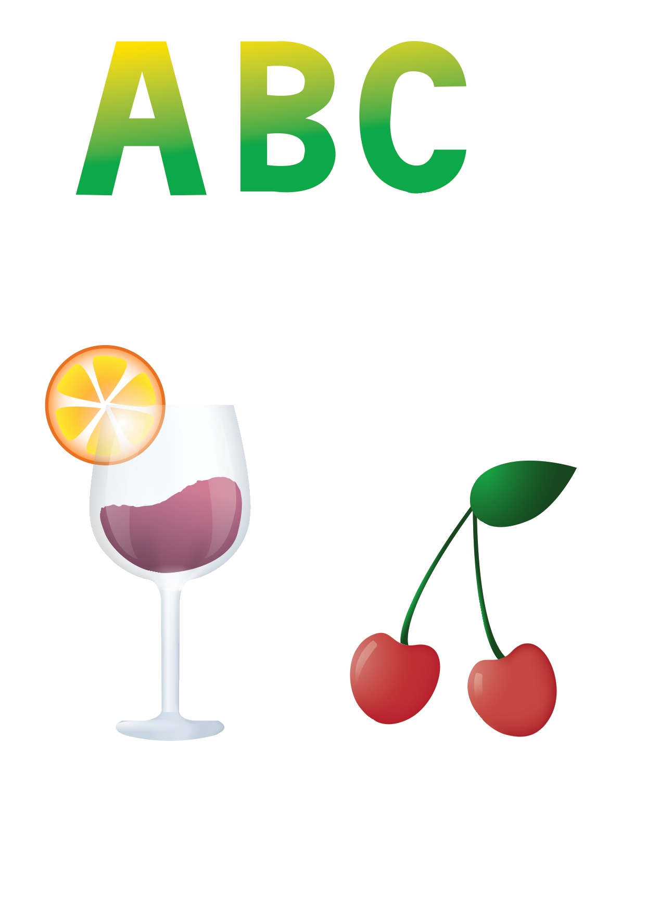
Vježba 5 - Retuširanje
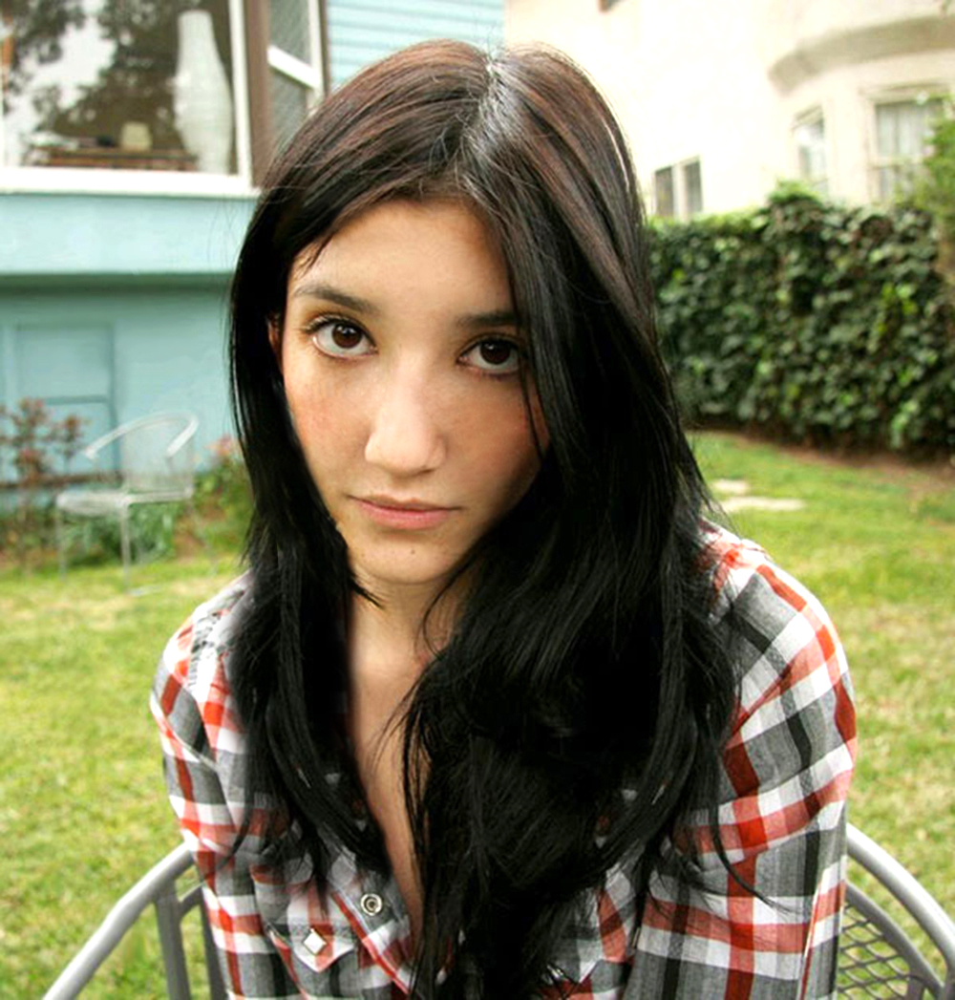
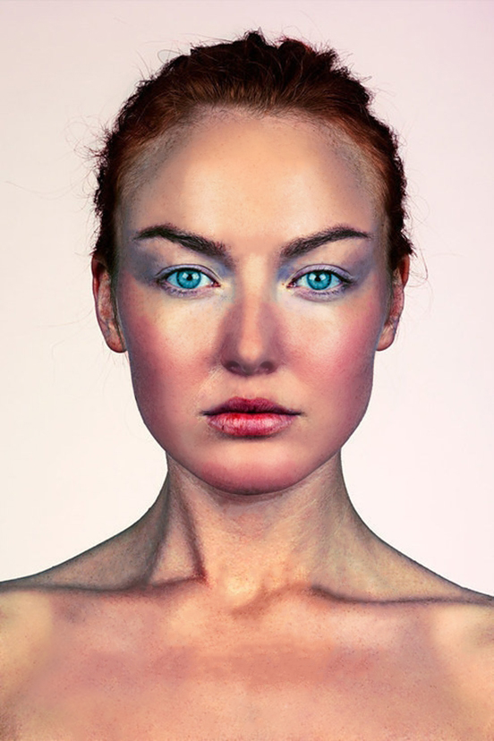
Vježba 6 - Koloriranje
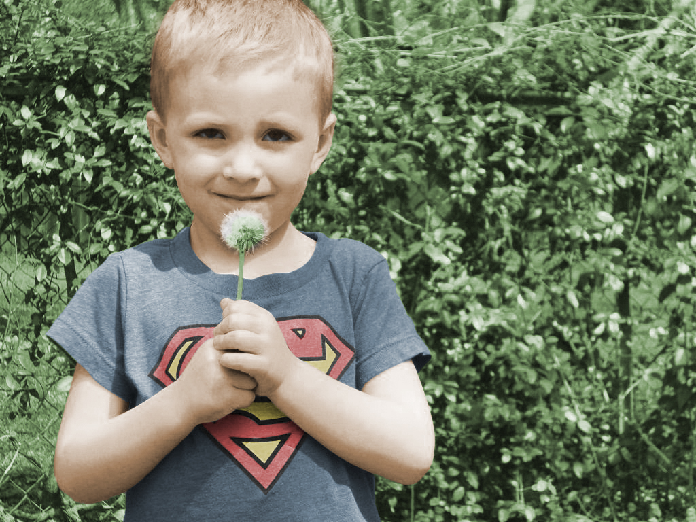
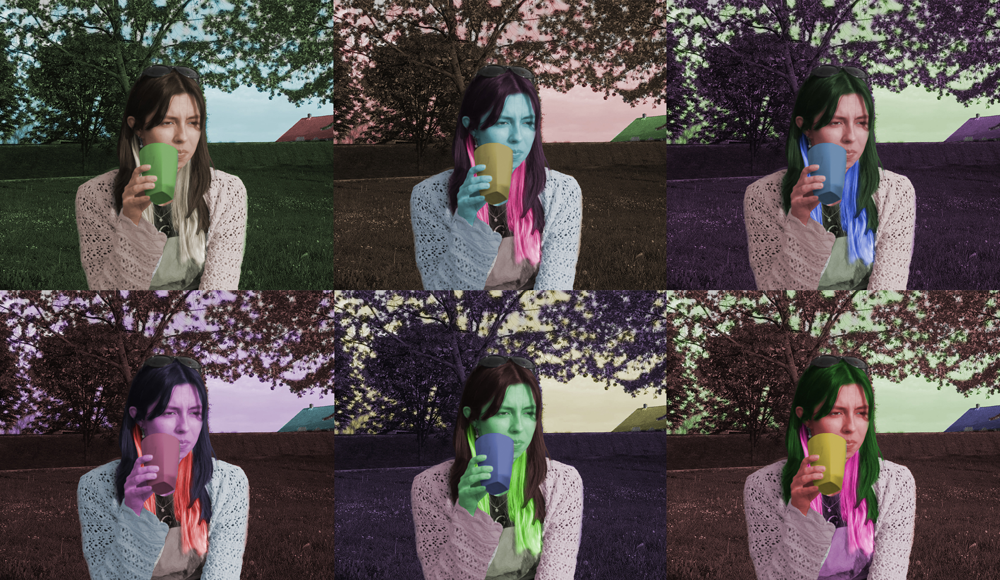
Vježba 7 - Fotomontaža
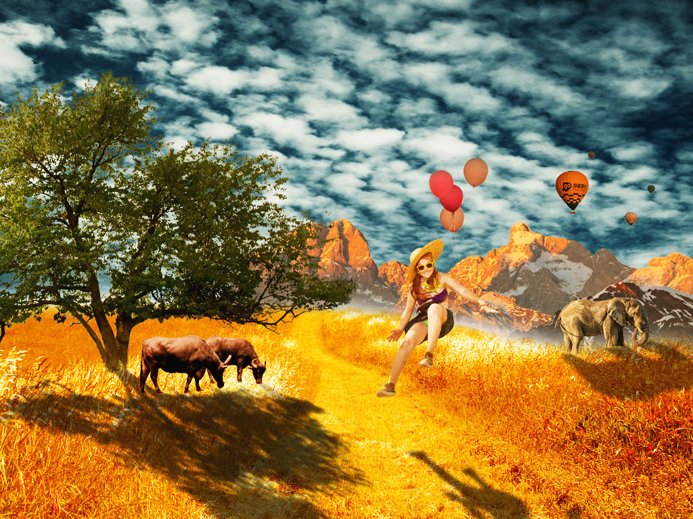
Vježba 10 - Web stranica u HTML-u
Link na stranicu vježbe 10.